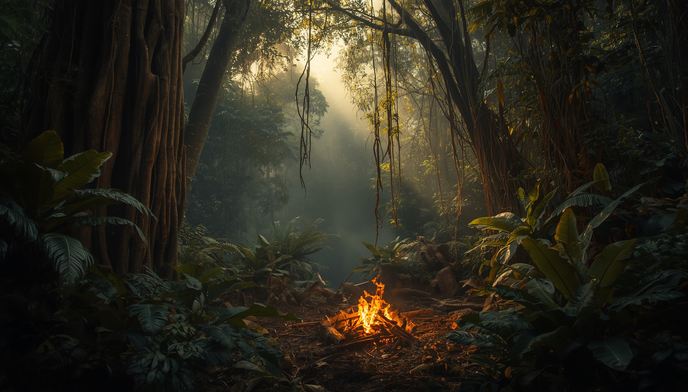

You are carrying too much
Responsibility, noise, or emotional repetition has made it difficult to hear what you actually need.
Step away from the pace and roles of everyday life for a carefully held week of preparation, ceremony, embodied practice, rest, and integration.
Considering your first ceremony? Begin with a private conversation. You do not need to decide before your questions are answered.
Set aside 7–10 minutes for yourself. Put on headphones, settle somewhere comfortable, and listen to one of Hanan’s ícaros—the sacred medicine songs shared in ceremony. Let your attention rest with the music, and notice how it feels in your body and what it stirs within you.

Hanan · Ceremonial maestro
Recreated from a ceremony recording by James Stark.
The audio could not be loaded. Please try again, or open the recording directly.
Hanan brings his Inca–Quechua lineage and a heartfelt devotion to ceremonial music. This song offers a glimpse of the seven-day plant medicine journey, where sacred songs, embodied practices, rest, and integration create space for reflection and renewal. After listening, take a quiet moment before continuing.
You may be new to inner work, or you may have spent years exploring it. What matters is not how much language you have—it is whether you are willing to meet yourself honestly and integrate what you discover.
Responsibility, noise, or emotional repetition has made it difficult to hear what you actually need.
You understand the pattern intellectually, yet familiar choices or relationships continue to pull you back.
You are looking for a sincere experience—not spiritual theatre, pressure, or a promise of instant transformation.
You are ready to prepare, communicate openly, respect the process, and carry the work into everyday life afterward.
It is a deliberately paced week for people willing to prepare with care, enter with respect, and make space for integration.
If ceremonial plant medicine is new to you, you deserve direct information—not mystery. The first step is understanding the nature of the experience, its intensity, and whether this particular retreat is an appropriate fit.
Ceremonial plant-medicine practices can bring intense shifts in perception, emotion, and physical experience. Here, the medicine work is one element within a wider seven-day retreat—not a standalone attraction.
No ceremony can promise healing, certainty, or a particular spiritual experience. The value of the week depends on many factors, including preparation, suitability, support, personal agency, and integration.
Health history, medication, mental-health history, and other contraindications can matter. Never stop or change prescribed medication to attend. Relevant information is reviewed confidentially before acceptance.
You should understand the format, expectations, known risks, support, and final terms before deciding. An enquiry is a conversation—not admission, payment, or pressure to participate.
Tell us whether this would be your first ceremony, what draws you to the retreat, and what would help you make a grounded decision.
The retreat is designed around conditions for reflection and integration rather than promises about what you will feel or become.
Distance from daily demands can make room to notice what has been difficult to hear inside ordinary routines.
Guided reflection and shared practice invite you to recognise recurring emotional, relational, or behavioural loops.
Breathwork, yoga, sound, time in nature, and rest help bring attention back into the body and present moment.
Preparation and post-retreat guidance help translate reflection into choices and practices that belong in real life.
The December programme is being finalised. Its foundation remains a deliberately paced week shaped around preparation, supported ceremonial work, recovery, reflection, and return.
Receive preparation guidance, participation requirements, and the information needed to arrive with realistic expectations.
Orientation, shared meals, gentle embodied practice, and time to meet the group establish the rhythm of the retreat.
Supported plant-medicine work sits within a wider rhythm of embodied practice, shared reflection, nourishment, and unhurried recovery time. The confirmed daily programme will be shared before anyone commits.
The final phase creates space to name what matters, consider practical next steps, and prepare for the transition back into everyday life.
The December retreat will be residential for seven days and six nights. The investment is USD 3,500 per person. We will publish the confirmed venue, travel guidance, accommodation, final inclusions, cancellation terms, and detailed programme after each item is final.
The December ceremonial programme is still being confirmed. It will be presented as one part of a wider seven-day rhythm of preparation, embodied practice, nourishment, rest, reflection, and integration—not as a standalone attraction or promised outcome.
Stephanie and Hanan hold distinct, complementary roles across preparation, ceremony, group relationship, and integration.

Founder of Rainbow Sanctuary, Stephanie supports the reflective, energy-awareness, group-field, and integration dimensions of the gathering. Her role is to help create a calm relational field in which questions, boundaries, and individual experience can be held with care.
Meet StephanieA Quechua lineage holder from Cusco and co-founder of Luz de Luz, Hanan brings more than ten years of work with Amazonian and Andean plant-medicine traditions, alongside ancestral music research and internal martial arts.

Daily practice, rest, shared reflection, and support before and after the gathering are part of the same journey.
Share what draws you to the December retreat and what you need to understand. The investment is USD 3,500 per person; confirmed inclusions, venue details, payment schedule, and cancellation terms are provided in writing before any commitment.
Register interest in DecemberYour enquiry is recorded for team follow-up, and an immediate acknowledgement is sent to the email address you provide. It does not reserve a place or create a payment obligation.
Share what draws you to the retreat and whether this would be your first ceremony.
Ask practical questions and discuss the experience, expectations, and next steps.
Relevant health, medication, contraindication, consent, and travel information is handled through the appropriate private process.
Accepted participants receive written venue, payment, cancellation, preparation, and arrival details before committing or booking travel.
The October retreat has moved into the Rainbow Sanctuary history. Explore the gathering and listen to Hanan’s sacred medicine song.
See the factual record of the previous seven-day gathering in Bocas del Toro, without expired payment or registration links.
View the October retreat history →A curated collage and approved photographs will show the setting, shared practices, and quiet spaces around the ceremonies. Participant images will appear only where public-use consent is confirmed.
Return to Hatun Hatun Temblarcuna, Hanan’s ícaro recreated from a ceremony recording. Put on your headphones and make a little space to listen.
Listen to Hanan’s song →